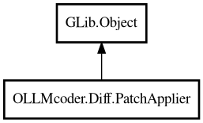

PatchApplier
Object Hierarchy:

Description:
public class PatchApplier : Object
Applies patches to text.
Takes a list of patches and applies them to the given text, returning the modified text.
Content:
Properties:
- public int match_distance { get; set; }
How far to search for a match (0 = exact location, 1000+ = broad
match).
- public int match_max_bits { get; set; }
The number of bits in an int.
- public double match_threshold { get; set; }
At what point is no match declared (0.0 = perfection, 1.0 = very
loose).
Creation methods:
Methods:
- public string apply (ArrayList<Patch> patches, string text) throws Error
Apply patches to text.
Inherited Members:
All known members inherited from class GLib.Object
- @get
- @new
- @ref
- @set
- add_toggle_ref
- add_weak_pointer
- bind_property
- connect
- constructed
- disconnect
- dispose
- dup_data
- dup_qdata
- force_floating
- freeze_notify
- get_class
- get_data
- get_property
- get_qdata
- get_type
- getv
- interface_find_property
- interface_install_property
- interface_list_properties
- is_floating
- new_valist
- new_with_properties
- newv
- notify
- notify_property
- ref_count
- ref_sink
- remove_toggle_ref
- remove_weak_pointer
- replace_data
- replace_qdata
- set_data
- set_data_full
- set_property
- set_qdata
- set_qdata_full
- set_valist
- setv
- steal_data
- steal_qdata
- thaw_notify
- unref
- watch_closure
- weak_ref
- weak_unref